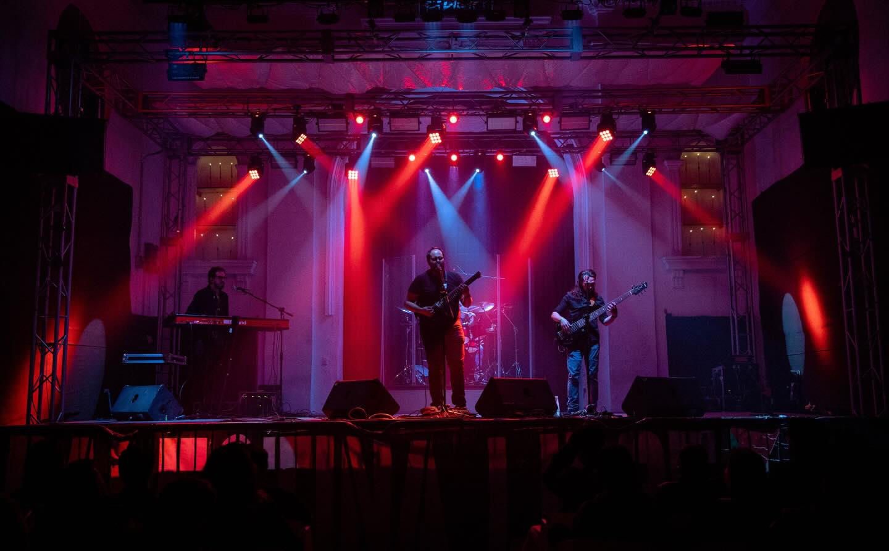

TANGERINE CIRCUS: EL VIAJE ONÍRICO DE VERMILION BIRD

La banda originaria de la Ciudad de México, Tangerine Circus, reafirma su posición en la vanguardia del progresivo con su más reciente sencillo: “Vermilion Bird”. Esta pieza se erige como un pilar fundamental de su cuarto álbum de estudio, "The Fortune Teller".
Pocas agrupaciones en la escena nacional manejan la narrativa instrumental con tal destreza. En esta entrega, la banda nos guía por un viaje lleno de matices, donde no hacen falta palabras para evocar imágenes vívidas y cinematográficas en la mente del oyente.

TEXTURAS Y DINÁMICA
“Vermilion Bird” es una pieza que respira. Su estructura evoluciona constantemente, cambiando de texturas y densidades con una fluidez asombrosa. Desde pasajes delicados hasta explosiones de metal técnico, Tangerine Circus demuestra que la ejecución técnica está al servicio de la emoción.
ANÁLISIS CONCEPTUAL: VERMILION BIRD
- ESTILO: Rock/Metal Progresivo Instrumental.
- EVOLUCIÓN: Parte del 4to álbum conceptual.
- DINÁMICA: Cambios constantes de textura sonora.
- IMPACTO: Experiencia auditiva cinematográfica.

FICHA DEL ÁLBUM: THE FORTUNE TELLER
- COMPOSICIÓN: Estructuras complejas y conceptuales.
- ORIGEN: CDMX, México.
- LEGADO: Consolidación de una narrativa instrumental única.